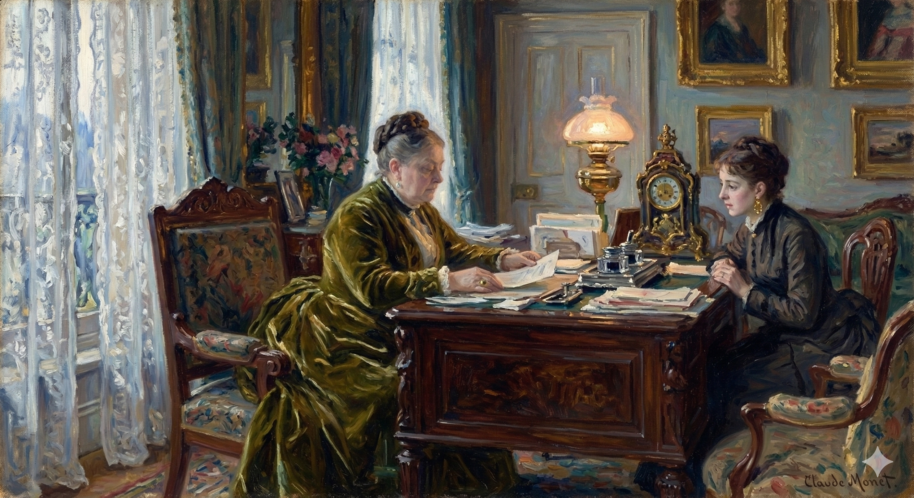

After Milly Theale and Merton Densher depart for their drive, Milly and Susan Shepherd confront the reality of Milly's medical situation and the emotional burden it places on their friendship. Seeking clarity and emotional release, Susan later visits Maud Lowder to forge a strategic alliance.Key actions and developments in this chapter include:Milly’s Exaltation and Command: Milly suppresses her own anxiety to comfort Susan, who is visibly struggling with the pity she feels after meeting with the doctor, Sir Luke Strett. Milly insists that they will face the future together on the doctor's basis—which she defines simply as "living"—and demands that Susan "buck up" and help her through.The Unnamed Woe: The two women share an intense embrace that serves as a silent pledge of mutual support, acknowledging the "torment of helplessness" Susan feels and the "woe" Milly experiences in having to manage Susan’s grief.Susan’s Confession to Maud: Unable to cry in front of Milly, Susan goes to Lancaster Gate and breaks down in Maud Lowder’s "sanctum". She reveals that while Sir Luke found Milly does not have the specific condition she feared, he discovered "something else" and believes the "specific" remedy for her is happiness.Maud’s Strategic Shift: Upon learning that happiness (specifically, love) is the doctor's prescription, Maud abandons her grand ambitions for Milly to marry a nobleman and decides to "handsomely" support a match with Merton Densher.The Collusion against Kate: Maud admits that Kate Croy "thinks she cares" for Densher but insists she is mistaken. She instructs Susan to "deny it utterly" to Milly, ensuring the girl remains deluded about any prior attachment between Kate and Densher so that Milly may pursue him without reservation.Shared Interests: Maud realizes that helping Milly secure Densher will simultaneously "remove" the threat Densher poses to Kate, aligning Susan’s devotion to Milly with Maud’s desire to control her niece’s future.
When Kate and Densher abandoned her to Mrs. Stringham on the day of her meeting them together and bringing them to luncheon, Milly, face to face with that companion, had had one of those moments in which the warned, the anxious fighter of the battle of life, as if once again feeling for the sword at his side, carries his hand straight to the quarter of his courage. She laid hers firmly on her heart, and the two women stood there showing each other a strange front. Susan Shepherd had received their great doctor's visit, which had been clearly no small affair for her; but Milly had since then, with insistence, kept in place, against communication and betrayal, as she now practically confessed, the barrier of their invited guests. "You've been too dear. With what I see you're full of you treated them beautifully. Isn't Kate charming when she wants to be?"
When Kate and Densher left her with Mrs. Stringham that day, after Milly introduced them and took them to lunch, Milly, alone with Mrs. Stringham, experienced a moment. She felt like a soldier about to fight, checking for his sword. She put her hand firmly on her chest, and the two women faced each other, a strange tension between them. Susan Shepherd had just had a big doctor's appointment, a serious event for her. But Milly had since then, stubbornly, prevented any discussion or revealing of secrets, as she now basically admitted, by keeping their guests around. "You've been too kind. Considering what you're dealing with, you treated them wonderfully. Isn't Kate charming when she wants to be?"
Poor Susie's expression, contending at first, as in a high fine spasm, with different dangers, had now quite let itself go. She had to make an effort to reach a point in space already so remote. "Miss Croy? Oh she was pleasant and clever. She knew," Mrs. Stringham added. "She knew."
Poor Susie's face, which had been fighting against something, like a tense muscle spasm, as she dealt with different difficulties, had finally relaxed completely. She struggled to remember something from a long time ago. "Miss Croy? Oh, she was nice and smart. She understood," Mrs. Stringham added. "She really did."
Milly braced herself—but conscious above all, at the moment, of a high compassion for her mate. She made her out as struggling—struggling in all her nature against the betrayal of pity, which in itself, given her nature, could only be a torment. Milly gathered from the struggle how much there was of the pity, and how therefore it was both in her tenderness and in her conscience that Mrs. Stringham suffered. Wonderful and beautiful it was that this impression instantly steadied the girl. Ruefully asking herself on what basis of ease, with the drop of their barrier, they were to find themselves together, she felt the question met with a relief that was almost joy. The basis, the inevitable basis, was that she was going to be sorry for Susie, who, to all appearance, had been condemned in so much more uncomfortable a manner to be sorry for her. Mrs. Stringham's sorrow would hurt Mrs. Stringham, but how could her own ever hurt? She had, the poor girl, at all events, on the spot, five minutes of exaltation in which she turned the tables on her friend with a pass of the hand, a gesture of an energy that made a wind in the air. "Kate knew," she asked, "that you were full of Sir Luke Strett?"
Milly steeled herself, but what she felt most strongly at that moment was a deep sympathy for her friend. She saw Susie fighting, struggling with everything she was, against the way pity was betraying her. Given Susie's personality, that betrayal could only be a source of torment. Milly understood from the struggle how much pity Susie felt, and how much she was suffering because of it, both in her kind heart and in her sense of right and wrong. It was amazing and beautiful that this understanding instantly calmed Milly. She ruefully wondered how they were going to be comfortable together now that the walls between them had come down. She felt the question answered with a sense of relief that was almost joyful. The basis of their relationship, the inevitable foundation, was that she was going to feel sorry for Susie, who, it seemed, had been forced into a much more difficult position: having to feel sorry for Milly. Susie's sorrow would hurt Susie, but how could Milly's sorrow ever hurt her? For at least five minutes, Milly, poor girl, felt a surge of exhilaration. She turned the tables on her friend with a wave of her hand, a gesture full of such energy that it seemed to create a gust of wind. "Kate knew," she asked, "that you were completely obsessed with Sir Luke Strett?"
"She spoke of nothing, but she was gentle and nice; she seemed to want to help me through." Which the good lady had no sooner said, however, than she almost tragically gasped at herself. She glared at Milly with a pretended pluck. "What I mean is that she saw one had been taken up with something. When I say she knows I should say she's a person who guesses." And her grimace was also, on its side, heroic. "But she doesn't matter, Milly."
She didn't really say anything specific, but she was kind and friendly; she seemed to want to support me. But as soon as the nice woman said that, she almost gasped dramatically, surprised by her own words. She gave Milly a brave, fake look. "What I mean is, she realized I was preoccupied with something. When I say she knows, I mean she’s someone who makes assumptions." And her expression was also, in its way, brave. "But she's not important, Milly."
The girl felt she by this time could face anything. "Nobody matters, Susie. Nobody." Which her next words, however, rather contradicted. "Did he take it ill that I wasn't here to see him? Wasn't it really just what he wanted—to have it out, so much more simply, with you?"
The girl felt like she could handle anything at this point. "Nobody matters, Susie. Nobody." But her next words seemed to disagree. "Do you think he was upset that I wasn't here to see him? Wasn't it really just what he wanted—to argue with you, which was much easier for him?"
"We didn't have anything 'out,' Milly," Mrs. Stringham delicately quavered.
"We didn't have any secrets, Milly," Mrs. Stringham said in a shaky voice.
"Didn't he awfully like you," Milly went on, "and didn't he think you the most charming person I could possibly have referred him to for an account of me? Didn't you hit it off tremendously together and in fact fall quite in love, so that it will really be a great advantage for you to have me as a common ground? You're going to make, I can see, no end of a good thing of me."
"Didn't he totally fall for you?" Milly continued. "And didn't he think you were the most amazing person I could have sent him to get information about me? Didn't you two click really well and basically fall in love, so that it'll actually be beneficial for you to have me as a shared interest? I can tell you're going to get a lot out of knowing me."
"My own child, my own child!" Mrs. Stringham pleadingly murmured; yet showing as she did so that she feared the effect even of deprecation.
"My child, my child!" Mrs. Stringham murmured in a pleading voice, even though she seemed to be afraid of the impact that even begging would have.
"Isn't he beautiful and good too himself?—altogether, whatever he may say, a lovely acquaintance to have made? You're just the right people for me—I see it now; and do you know what, between you, you must do?" Then as Susie still but stared, wonderstruck and holding herself: "You must simply see me through. Any way you choose. Make it out together. I, on my side, will be beautiful too, and we'll be—the three of us, with whatever others, oh as many as the case requires, any one you like!—a sight for the gods. I'll be as easy for you as carrying a feather." Susie took it for a moment in such silence that her young friend almost saw her—and scarcely withheld the observation—as taking it for "a part of the disease." This accordingly helped Milly to be, as she judged, definite and wise. "He's at any rate awfully interesting, isn't he?—which is so much to the good. We haven't at least—as we might have, with the way we tumbled into it—got hold of one of the dreary."
Isn't he gorgeous and a genuinely good person? Honestly, no matter what he says, isn't he a wonderful person to know? You two are perfect for me - I see that now. And do you know what you both have to do, together? (Susie was still staring, stunned and trying to compose herself). You simply have to help me through this. Whatever way you think best. Figure it out together. I'll be fantastic too, and the three of us - plus anyone else we need, whoever you think would be good! - we'll be an amazing sight. I'll make this so easy for you; it'll be like carrying a feather. Susie was silent for a moment, and her young friend almost thought she was seeing this as "part of the illness," though she stopped herself from saying it out loud. This made Milly feel determined and wise. "He's fascinating, at least, isn't he? Which is a huge plus. At least we haven't - given how easily we got into this - ended up with someone boring."
"Interesting, dearest?"—Mrs. Stringham felt her feet firmer. "I don't know if he's interesting or not; but I do know, my own," she continued to quaver, "that he's just as much interested as you could possibly desire."
"Interesting, darling?" Mrs. Stringham felt more confident. "I don't know if he *is* interesting or not, but I do know, dear," she continued with a shaky voice, "that he's just as interested in you as you could possibly want him to be."
"Certainly—that's it. Like all the world."
Absolutely—that's the way it is. Just like everything else.
"No, my precious, not like all the world. Very much more deeply and intelligently."
No, my dear, not like everyone else. Much more profoundly and thoughtfully.
"Ah there you are!" Milly laughed. "That's the way, Susie, I want you. So 'buck' up, my dear. We'll have beautiful times with him. Don't worry."
"Oh, there you are!" Milly laughed. "That's what I'm talking about, Susie, that's what I want. So cheer up, honey. We'll have a wonderful time with him. Don't worry."
"I'm not worrying, Milly." And poor Susie's face registered the sublimity of her lie.
"I'm not worried, Milly." And poor Susie's face showed how untrue that was.
It was at this that, too sharply penetrated, her companion went to her, met by her with an embrace in which things were said that exceeded speech. Each held and clasped the other as if to console her for this unnamed woe, the woe for Mrs. Stringham of learning the torment of helplessness, the woe for Milly of having her, at such a time, to think of. Milly's assumption was immense, and the difficulty for her friend was that of not being able to gainsay it without bringing it more to the proof than tenderness and vagueness could permit. Nothing in fact came to the proof between them but that they could thus cling together—except indeed that, as we have indicated, the pledge of protection and support was all the younger woman's own. "I don't ask you," she presently said, "what he told you for yourself, nor what he told you to tell me, nor how he took it, really, that I had left him to you, nor what passed between you about me in any way. It wasn't to get that out of you that I took my means to make sure of your meeting freely—for there are things I don't want to know. I shall see him again and again and shall know more than enough. All I do want is that you shall see me through on his basis, whatever it is; which it's enough—for the purpose—that you yourself should know: that is with him to show you how. I'll make it charming for you—that's what I mean; I'll keep you up to it in such a way that half the time you won't know you're doing it. And for that you're to rest upon me. There. It's understood. We keep each other going, and you may absolutely feel of me that I shan't break down. So, with the way you haven't so much as a dig of the elbow to fear, how could you be safer?"
Upon hearing that, her friend, deeply affected, went to her. They embraced, exchanging words that went beyond what could be spoken. They held each other tightly, as if comforting each other about an unspoken sadness: Mrs. Stringham’s despair at realizing her helplessness, and Milly's sadness that her friend had to witness this at such a difficult time. Milly was making a huge assumption, and the challenge for her friend was that she couldn't deny it without confirming it more directly than gentle words and vague statements would allow. The only thing that truly happened between them was their ability to cling to each other, except that, as we’ve seen, the younger woman was the one offering protection and support. "I'm not asking," she said after a moment, "what he told you about yourself, or what he told you to tell me, or how he really reacted to me leaving him to you, or anything that was said between you about me. I didn’t arrange this meeting to find that out – there are some things I don't want to know. I’ll be seeing him again, and I’ll learn plenty then. All I want is for you to support me, based on whatever his feelings are, which you already understand well enough. I trust him to tell you how. I'll make it enjoyable for you, I promise. I’ll make this whole thing seem easy, so that you won't even realize you’re doing it. And in return, you can lean on me. There. It's settled. We'll support each other. You can be absolutely certain that I won't fall apart. You have absolutely nothing to worry about. How could you be any safer?"
"He told me I can help you—of course he told me that," Susie, on her side, eagerly contended. "Why shouldn't he, and for what else have I come out with you? But he told me nothing dreadful—nothing, nothing, nothing," the poor lady passionately protested. "Only that you must do as you like and as he tells you—which is just simply to do as you like."
"He said I can help you – of course he did," Susie eagerly insisted. "Why wouldn't he, and what other reason do I have for being here with you? But he didn't tell me anything awful—nothing, nothing, nothing," the poor lady passionately declared. "Only that you should do what you want and what he tells you – which really just means to do whatever you want."
"I must keep in sight of him. I must from time to time go to him. But that's of course doing as I like. It's lucky," Milly smiled, "that I like going to him."
I need to stay where I can see him. I have to visit him now and then. But that's just because I want to. It's a good thing, Milly smiled, "that I enjoy seeing him."
Mrs. Stringham was here in agreement; she gave a clutch at the account of their situation that most showed it as workable. "That's what will be charming for me, and what I'm sure he really wants of me—to help you to do as you like."
Mrs. Stringham agreed, latching onto the explanation of their situation and making it sound manageable. "That's what will be wonderful for me, and I'm positive he wants me to do – to help you do what you want."
"And also a little, won't it be," Milly laughed, "to save me from the consequences? Of course," she added, "there must first be things I like."
"And isn't that a little bit," Milly laughed, "to protect me from the fallout? Of course," she added, "first there have to be things I actually enjoy."
"Oh I think you'll find some," Mrs. Stringham more bravely said. "I think there are some—as for instance just this one. I mean," she explained, "really having us so."
"Oh, I think you'll be able to find some," Mrs. Stringham said more boldly. "I think there are some – like, for example, this one. I mean," she clarified, "really making use of us."
Milly thought. "Just as if I wanted you comfortable about him, and him the same about you? Yes—I shall get the good of it."
Milly thought, "As if I wanted you to feel good about him, and him to feel good about you? Yes—I'll get what I want out of this."
Susan Shepherd appeared to wander from this into a slight confusion. "Which of them are you talking of?"
Susan Shepherd seemed to get a little lost in thought. "Which one are you referring to?"
Milly wondered an instant—then had a light. "I'm not talking of Mr. Densher." With which moreover she showed amusement. "Though if you can be comfortable about Mr. Densher too so much the better."
Milly hesitated for a moment, then she had an idea.
"I'm not talking about Mr. Densher." She also seemed amused. "Although, if you're comfortable with Mr. Densher too, that's even better."
"Oh you meant Sir Luke Strett? Certainly he's a fine type. Do you know," Susie continued, "whom he reminds me of? Of our great man—Dr. Buttrick of Boston."
"Oh, you mean Luke Strett? Definitely, he's a good guy. You know," Susie went on, "who he reminds me of? Our local celebrity—Dr. Buttrick from Boston."
Milly recognised Dr. Buttrick of Boston, but she dropped him after a tributary pause. "What do you think, now that you've seen him, of Mr. Densher?"
Milly knew Dr. Buttrick from Boston, but she didn't say anything to him right away. After a moment, she asked, "Now that you've seen him, what do you think of Mr. Densher?"
It was not till after consideration, with her eyes fixed on her friend's, that Susie produced her answer. "I think he's very handsome."
Susie didn't respond until she thought about it, looking directly at her friend. Finally, she said, "I think he's really good-looking."
Milly remained smiling at her, though putting on a little the manner of a teacher with a pupil. "Well, that will do for the first time. I have done," she went on, "what I wanted."
Milly kept smiling at her, but she adopted a slightly condescending tone, like a teacher with a student. "Alright, that's enough for now. I'm finished," she continued, "I've done what I wanted to do."
"Then that's all we want. You see there are plenty of things."
Okay, that's everything we need. You know, there's a lot more stuff.
Milly shook her head for the "plenty." "The best is not to know—that includes them all. I don't—I don't know. Nothing about anything—except that you're with me. Remember that, please. There won't be anything that, on my side, for you, I shall forget. So it's all right."
Milly shook her head dismissively. "The best thing is not to know – not about any of it. I don't – I truly don't know anything. Except that you're here with me. Please remember that. There won't be anything I'll forget, anything I wouldn't do for you. So, everything's okay."
The effect of it by this time was fairly, as intended, to sustain Susie, who dropped in spite of herself into the reassuring. "Most certainly it's all right. I think you ought to understand that he sees no reason—"
By this point, it was working as planned, helping Susie feel better. She couldn't help but feel reassured. "Of course it's alright. You should know he doesn't see any reason to—"
"Why I shouldn't have a grand long life?" Milly had taken it straight up, as to understand it and for a moment consider it. But she disposed of it otherwise. "Oh of course I know that." She spoke as if her friend's point were small.
"Why shouldn't I live a long, full life?" Milly asked, taking the question seriously and pausing to think about it for a moment. But she dismissed it quickly. "Oh, obviously," she said, as if her friend's concern was insignificant.
Mrs. Stringham tried to enlarge it. "Well, what I mean is that he didn't say to me anything that he hasn't said to yourself."
Mrs. Stringham tried to clarify. "Look, what I'm saying is he didn't tell me anything he hasn't already told you."
"Really?—I would in his place!" She might have been disappointed, but she had her good humour. "He tells me to live"—and she oddly limited the word.
"Really? I would have done it!" She might have been disappointed, but she was still in a good mood. "He tells me to live"—and she paused, making the word sound strange.
It left Susie a little at sea. "Then what do you want more?"
Susie was a bit confused. "So, what else do you want?"
"My dear," the girl presently said, "I don't 'want,' as I assure you, anything. Still," she added, "I am living. Oh yes, I'm living."
"Honey," the girl said after a moment, "I really don't *need* anything, I swear. But," she continued, "I am alive. Oh yeah, I'm alive."
It put them again face to face, but it had wound Mrs. Stringham up. "So am I then, you'll see!"—she spoke with the note of her recovery. Yet it was her wisdom now—meaning by it as much as she did—not to say more than that. She had risen by Milly's aid to a certain command of what was before them; the ten minutes of their talk had in fact made her more distinctly aware of the presence in her mind of a new idea. It was really perhaps an old idea with a new value; it had at all events begun during the last hour, though at first but feebly, to shine with a special light. That was because in the morning darkness had so suddenly descended—a sufficient shade of night to bring out the power of a star. The dusk might be thick yet, but the sky had comparatively cleared; and Susan Shepherd's star from this time on continued to twinkle for her. It was for the moment, after her passage with Milly, the one spark left in the heavens. She recognised, as she continued to watch it, that it had really been set there by Sir Luke Strett's visit and that the impressions immediately following had done no more than fix it. Milly's reappearance with Mr. Densher at her heels—or, so oddly perhaps, at Miss Croy's heels, Miss Croy being at Milly's—had contributed to this effect, though it was only with the lapse of the greater obscurity that Susie made that out. The obscurity had reigned during the hour of their friends' visit, faintly clearing indeed while, in one of the rooms, Kate Croy's remarkable advance to her intensified the fact that Milly and the young man were conjoined in the other. If it hadn't acquired on the spot all the intensity of which it was capable, this was because the poor lady still sat in her primary gloom, the gloom the great benignant doctor had practically left behind him.
It brought them back together, but it had upset Mrs. Stringham. "Well, I'll show you!" she said, her voice regaining its strength. But now she was wise – meaning it in a profound way – and knew better than to say anything more. Milly had helped her gain some control over the situation; their ten minutes of conversation had actually made her more aware of a new idea in her mind. It was possibly an old idea, but with a new significance; at any rate, it had begun to emerge during the past hour, though at first it was weak, shining with a special clarity. That was because the morning had suddenly become dark – a darkness sufficient to bring out the power of a star. The twilight might still be heavy, but the sky had comparatively cleared; and Susan Shepherd's star continued to twinkle for her from this point on. After her encounter with Milly, it was the only spark left in the heavens for the moment. As she continued to watch it, she realized that Sir Luke Strett's visit had actually placed it there and that the immediate impressions following had only served to solidify it. Milly's reappearance, with Mr. Densher right behind her – or, oddly enough, behind Miss Croy, who was with Milly – had contributed to this effect, even though Susie didn't fully realize it until the greater darkness lifted. The obscurity had reigned during their friends' visit, faintly clearing, however, in the other room, where Kate Croy's remarkable advance towards her intensified the fact that Milly and the young man were together in the other room. If it hadn't acquired all of the intensity it was capable of on the spot, it was because the poor woman was still shrouded in her primary gloom, the gloom the kind doctor had practically left behind him.
The intensity the circumstance in question might wear to the informed imagination would have been sufficiently revealed for us, no doubt—and with other things to our purpose—in two or three of those confidential passages with Mrs. Lowder that she now permitted herself. She hadn't yet been so glad that she believed in her old friend; for if she hadn't had, at such a pass, somebody or other to believe in she should certainly have stumbled by the way. Discretion had ceased to consist of silence; silence was gross and thick, whereas wisdom should taper, however tremulously, to a point. She betook herself to Lancaster Gate the morning after the colloquy just noted; and there, in Maud Manningham's own sanctum, she gradually found relief in giving an account of herself. An account of herself was one of the things that she had long been in the habit of expecting herself regularly to give—the regularity depending of course much on such tests of merit as might, by laws beyond her control, rise in her path. She never spared herself in short a proper sharpness of conception of how she had behaved, and it was a statement that she for the most part found herself able to make. What had happened at present was that nothing, as she felt, was left of her to report to; she was all too sunk in the inevitable and the abysmal. To give an account of herself she must give it to somebody else, and her first instalment of it to her hostess was that she must please let her cry. She couldn't cry, with Milly in observation, at the hotel, which she had accordingly left for that purpose; and the power happily came to her with the good opportunity. She cried and cried at first—she confined herself to that; it was for the time the best statement of her business. Mrs. Lowder moreover intelligently took it as such, though knocking off a note or two more, as she said, while Susie sat near her table. She could resist the contagion of tears, but her patience did justice to her visitor's most vivid plea for it. "I shall never be able, you know, to cry again—at least not ever with her; so I must take it out when I can. Even if she does herself it won't be for me to give away; for what would that be but a confession of despair? I'm not with her for that—I'm with her to be regularly sublime. Besides, Milly won't cry herself."
The full impact of the situation, as it would likely appear to someone who understood it, would have been clear to us—and helped us with our goals—through a few private conversations Mrs. Lowder allowed herself to have. She was extremely relieved that she had faith in her old friend; if she hadn't had someone to confide in, she would have broken down completely. Restraint no longer meant staying silent; silence was now considered obvious and unhelpful, whereas intelligent choices should be carefully and delicately made. The morning after their last conversation, she went to Lancaster Gate, and there, in Maud Manningham's private space, she found some relief by talking about herself. She had always expected to regularly analyze herself, but this self-reflection depended on how she handled the challenges that unexpectedly came her way. She was always honest about her own behavior, and generally, she found it easy to be objective. However, now, she felt that there was nothing left of her to assess; she was completely overwhelmed by the unavoidable and hopeless. To examine herself, she needed to talk to someone else, and the first part of that conversation with her hostess was simply to let her cry. She couldn't cry at the hotel while Milly was around, so she'd left for that purpose; fortunately, she was now able to release her emotions. She cried and cried at first—she only allowed herself to do that; at that moment, it was the most important thing she had to say. Mrs. Lowder understood this perfectly, even while she continued writing, as she explained, while Susie sat by her table. She could resist the urge to cry herself, but she patiently listened to her visitor's heartfelt plea for understanding. "I know I will never be able to cry again—at least not in front of her; so I must do it when I can. Even if *she* cries, it won't be for me to respond to; that would be admitting defeat. I'm not with her for that—I'm with her to be consistently optimistic. Besides, Milly won't cry herself."
"I'm sure I hope," said Mrs. Lowder, "that she won't have occasion to."
"I really hope," said Mrs. Lowder, "that she won't need to."
"She won't even if she does have occasion. She won't shed a tear. There's something that will prevent her."
She won't cry, even if she has a reason to. Something will stop her.
"Oh!" said Mrs. Lowder.
"Oh!" said Mrs. Lowder.
"Yes, her pride," Mrs. Stringham explained in spite of her friend's doubt, and it was with this that her communication took consistent form. It had never been pride, Maud Manningham had hinted, that kept her from crying when other things made for it; it had only been that these same things, at such times, made still more for business, arrangements, correspondence, the ringing of bells, the marshalling of servants, the taking of decisions. "I might be crying now," she said, "if I weren't writing letters"—and this quite without harshness for her anxious companion, to whom she allowed just the administrative margin for difference. She had interrupted her no more than she would have interrupted the piano-tuner. It gave poor Susie time; and when Mrs. Lowder, to save appearances and catch the post, had, with her addressed and stamped notes, met at the door of the room the footman summoned by the pressure of a knob, the facts of the case were sufficiently ready for her. It took but two or three, however, given their importance, to lay the ground for the great one—Mrs. Stringham's interview of the day before with Sir Luke, who had wished to see her about Milly.
"Yes, it was her pride," Mrs. Stringham explained, even though her friend doubted it. And that's what made her explanation clear and consistent. Maud Manningham had suggested it wasn't pride that stopped her from crying when she felt like it. Instead, those same things – whatever was upsetting her – also required practical matters: arrangements, paperwork, phone calls, the summoning of staff, making decisions. "I might be crying right now," she said, "if I weren't writing letters." She said this without any harshness towards her worried friend, giving her just enough space to disagree. She hadn't interrupted her any more than she'd interrupt a piano tuner. This gave poor Susie time to think. And when Mrs. Lowder, wanting to maintain appearances and catch the mail, met the footman at the door (the footman having been summoned by a button press), the important details were ready. It only took two or three details to set the stage for the big one: Mrs. Stringham's meeting the day before with Sir Luke, who wanted to talk to her about Milly.
"He had wished it himself?"
Did he want it to happen?
"I think he was glad of it. Clearly indeed he was. He stayed a quarter of an hour. I could see that for him it was long. He's interested," said Mrs. Stringham.
"I think he was happy about it. He definitely was. He stayed for fifteen minutes. I could tell that seemed like a long time to him. He's interested," said Mrs. Stringham.
"Do you mean in her case?"
Are you talking about her?
"He says it isn't a case."
He says it's not a big deal.
"What then is it?"
What's the point?
"It isn't, at least," Mrs. Stringham explained, "the case she believed it to be—thought it at any rate might be—when, without my knowledge, she went to see him. She went because there was something she was afraid of, and he examined her thoroughly—he has made sure. She's wrong—she hasn't what she thought."
"At least, it's not what she thought it was," Mrs. Stringham clarified. "Not even close to what she believed or maybe just hoped it was, when she went to see him without telling me. She went because she was scared of something, and he checked her out completely – he made sure. She's mistaken—she doesn't have what she thought she had."
"And what did she think?" Mrs. Lowder demanded.
"So, what did she think?" Mrs. Lowder asked.
"He didn't tell me."
He didn't tell me.
"And you didn't ask?"
"So, you didn't even ask?"
"I asked nothing," said poor Susie—"I only took what he gave me. He gave me no more than he had to—he was beautiful," she went on. "He is, thank God, interested."
"I didn't ask for anything," said poor Susie. "I just took what he offered. He only gave me the bare minimum—he was gorgeous," she continued. "Thank God, he's interested."
"He must have been interested in you, dear," Maud Manningham observed with kindness.
"He must have liked you," Maud Manningham said gently.
Her visitor met it with candour. "Yes, love, I think he is. I mean that he sees what he can do with me."
Her visitor responded honestly. "Yes, dear, I believe he is. What I mean is, he's figuring out how he can take advantage of me."
Mrs. Lowder took it rightly. "For her."
Mrs. Lowder was correct. "For her sake."
"For her. Anything in the world he will or he must. He can use me to the last bone, and he likes at least that. He says the great thing for her is to be happy."
He'd do anything for her. He'd even use me up completely, and he enjoys that, at least. He says all that matters to her is her happiness.
"It's surely the great thing for every one. Why, therefore," Mrs. Lowder handsomely asked, "should we cry so hard about it?"
"It's definitely the best outcome for everyone. So, why," Mrs. Lowder asked kindly, "should we be so upset?"
"Only," poor Susie wailed, "that it's so strange, so beyond us. I mean if she can't be."
"It's just," Susie sobbed, "it's so weird, so unbelievable. I mean, if she's really gone."
"She must be." Mrs. Lowder knew no impossibles. "She shall be."
"She has to be." Mrs. Lowder didn't believe in impossible things.
"She will be."
"Well—if you'll help. He thinks, you know, we can help."
Okay, if you're willing to help. He believes we can, you know.
Mrs. Lowder faced a moment, in her massive way, what Sir Luke Strett thought. She sat back there, her knees apart, not unlike a picturesque ear-ringed matron at a market-stall; while her friend, before her, dropped their items, tossed the separate truths of the matter one by one, into her capacious apron. "But is that all he came to you for—to tell you she must be happy?"
Mrs. Lowder waited, in her large manner, to hear Sir Luke Strett's opinion. She sat with her legs spread, resembling a well-dressed woman at a market stall. Her friend, sitting in front of her, laid out the facts, one by one, for her to consider. "But is that the only reason he came to you—to tell you she needs to be happy?"
"That she must be made so—that's the point. It seemed enough, as he told me," Mrs. Stringham went on; "he makes it somehow such a grand possible affair."
That's the whole issue – she has to be that way. That's what he seemed to think, as he explained it to me," Mrs. Stringham continued. "Somehow, he makes it sound like a grand, achievable thing."
"Ah well, if he makes it possible!"
Okay, if he can pull it off!
"I mean especially he makes it grand. He gave it to me, that is, as my part. The rest's his own."
He really makes a big deal of it. He gave that to me, specifically, as my share. The rest is his.
"And what's the rest?" Mrs. Lowder asked.
"What else?" Mrs. Lowder asked.
"I don't know. His business. He means to keep hold of her."
I don't know. He's up to something. He intends to keep her.
"Then why do you say it isn't a 'case'? It must be very much of one."
Then why are you saying it's not a "case"? It clearly is.
Everything in Mrs. Stringham confessed to the extent of it. "It's only that it isn't the case she herself supposed."
Mrs. Stringham admitted everything, including the full scope of it. "It's just that the reality isn't what she thought it was."
"It's another?"
Is there another one?
"It's another."
Here's another one.
"Examining her for what she supposed he finds something else?"
Does he find something else when he examines her, or what he thinks he's looking for?
"Something else."
Another thing.
"And what does he find?"
And what does he discover?
"Ah," Mrs. Stringham cried, "God keep me from knowing!"
"Oh," Mrs. Stringham exclaimed, "I hope I never find out!"
"He didn't tell you that?"
You didn't know that?
But poor Susie had recovered herself. "What I mean is that if it's there I shall know in time. He's considering, but I can trust him for it—because he does, I feel, trust me. He's considering," she repeated.
But poor Susie had calmed down. "What I mean is, if it's supposed to happen, I'll find out eventually. He's thinking about it, but I can trust him – because I feel like he trusts me. He's thinking," she repeated.
"He's in other words not sure?"
So, basically, he's not sure?
"Well, he's watching. I think that's what he means. She's to get away now, but to come back to him in three months."
Okay, he's keeping an eye on us. I think that's the message. She needs to leave now, but return to him in three months.
"Then I think," said Maud Lowder, "that he oughtn't meanwhile to scare us."
"So, I don't think," said Maud Lowder, "that he should keep frightening us in the meantime."
It roused Susie a little, Susie being already enrolled in the great doctor's cause. This came out at least in her glimmer of reproach. "Does it scare us to enlist us for her happiness?"
It bothered Susie, who was already on board with the doctor's plan. This was evident in her slightly disapproving tone. "Are we afraid to help her be happy?"
Mrs. Lowder was rather stiff for it. "Yes; it scares me. I'm always scared—I may call it so—till I understand. What happiness is he talking about?"
Mrs. Lowder was a bit uptight about it. "Yes, it's frightening. I'm always scared – I guess you could say – until I figure things out. What happiness is he even talking about?"
Mrs. Stringham at this came straight. "Oh you know!"
Mrs. Stringham immediately perked up. "Oh, you know!"
She had really said it so that her friend had to take it; which the latter in fact after a moment showed herself as having done. A strange light humour in the matter even perhaps suddenly aiding, she met it with a certain accommodation. "Well, say one seems to see. The point is—!" But, fairly too full now of her question, she dropped.
She had really phrased it in a way that her friend couldn't ignore; and her friend did, in fact, acknowledge it a moment later. A touch of odd humor, maybe even a sudden spark of it, helped her respond with a certain flexibility. "Well, let's just say one understands. The thing is—!" But, overwhelmed by her own question, she trailed off.
"The point is will it cure?"
Will it actually work?
"Precisely. Is it absolutely a remedy—the specific?"
Exactly. Is it definitely a cure—the solution?
"Well, I should think we might know!" Mrs. Stringham delicately declared.
"Well, I would hope so!" Mrs. Stringham said delicately.
"Ah but we haven't the complaint."
But we don't have a problem.
"Have you never, dearest, been in love?" Susan Shepherd enquired.
"Darling, have you ever been in love?" Susan Shepherd asked.
"Yes, my child; but not by the doctor's direction."
Yes, dear; but not because the doctor told you to.
Maud Manningham had spoken perforce with a break into momentary mirth, which operated—and happily too—as a challenge to her visitor's spirit. "Oh of course we don't ask his leave to fall. But it's something to know he thinks it good for us."
Maud Manningham had spoken, forced to laugh briefly, which – thankfully – seemed to dare her guest to respond. "Oh, we don't need his permission to fall in love, of course. But it's nice to know he approves."
"My dear woman," Mrs. Lowder cried, "it strikes me we know it without him. So that when that's all he has to tell us—!"
"My dear," Mrs. Lowder exclaimed, "I think we already know. So if that's all he has to say—!"
"Ah," Mrs. Stringham interposed, "it isn't 'all.' I feel Sir Luke will have more; he won't have put me off with anything inadequate. I'm to see him again; he as good as told me that he'll wish it. So it won't be for nothing."
"Oh," Mrs. Stringham interrupted, "it's not 'everything.'
I think Sir Luke will offer more; he wouldn't have given
me something insufficient. I'm meeting with him
again; he practically said he'd want to. So
it won't be in vain."
"Then what will it be for? Do you mean he has somebody of his own to propose? Do you mean you told him nothing?"
"So, what's the point then? Are you saying he's going to ask someone else out? Did you tell him nothing at all?"
Mrs. Stringham dealt with these questions. "I showed him I understood him. That was all I could do. I didn't feel at liberty to be explicit; but I felt, even though his visit so upset me, the comfort of what I had from you night before last."
Mrs. Stringham handled these questions. "I showed him I understood what he was saying. That was all I could do. I didn't feel I could be completely open; but I felt reassured, even though his visit was so upsetting, by the comfort I got from you the night before last."
"What I spoke to you of in the carriage when we had left her with Kate?"
What did I talk to you about in the carriage after we left her with Kate?
"You had seen, apparently, in three minutes. And now that he's here, now that I've met him and had my impression of him, I feel," said Mrs. Stringham, "that you've been magnificent."
"You figured it out in, like, three minutes, apparently. And now that he's here, now that I've met him and formed my opinion of him, I think," said Mrs. Stringham, "that you were brilliant."
"Of course I've been magnificent. When," asked Maud Manningham, "was I anything else? But Milly won't be, you know, if she marries Merton Densher."
"Of course I've been fabulous. When," asked Maud Manningham, "have I been anything less? But Milly won't be, you know, if she marries Merton Densher."
"Oh it's always magnificent to marry the man one loves. But we're going fast!" Mrs. Stringham woefully smiled.
"Oh, it's wonderful to marry the man you love, of course. But we're rushing things!" Mrs. Stringham said with a sad smile.
"The thing is to go fast if I see the case right. What had I after all but my instinct of that on coming back with you, night before last, to pick up Kate? I felt what I felt—I knew in my bones the man had returned."
The point is to move quickly, if I'm reading this situation correctly. When you think about it, what else did I have to go on when I came back with you the night before last to get Kate? I just felt it – I knew instinctively that the man was back.
"That's just where, as I say, you're magnificent. But wait," said Mrs. Stringham, "till you've seen him."
That's exactly where you really shine, like I said.
But wait," Mrs. Stringham said, "until you've met him."
"I shall see him immediately"—Mrs. Lowder took it up with decision. "What is then," she asked, "your impression?"
"I'll see him right away," Mrs. Lowder said firmly. "So, what do you think?"
Mrs. Stringham's impression seemed lost in her doubts. "How can he ever care for her?"
Mrs. Stringham seemed to get caught up in her own doubts. "How could he possibly love her?"
Her companion, in her companion's heavy manner, sat on it. "By being put in the way of it."
Her friend, in that friend's usual serious way, sat on it. "By being the one who put it there."
"For God's sake then," Mrs. Stringham wailed, "put him in the way! You have him, one feels, in your hand."
"For goodness sake," Mrs. Stringham cried, "help him! You seem to have him under your control."
Maud Lowder's eyes at this rested on her friend's. "Is that your impression of him?"
Maud Lowder looked directly at her friend.
"Is that what you think of him?"
"It's my impression, dearest, of you. You handle every one."
I think you're able to charm anyone.
Mrs. Lowder's eyes still rested, and Susan Shepherd now felt, for a wonder, not less sincere by seeing that she pleased her. But there was a great limitation. "I don't handle Kate."
Mrs. Lowder was still watching, and Susan Shepherd was, surprisingly, feeling genuine because she saw she was making Mrs. Lowder happy. But there was a big problem. "I don't control Kate."
It suggested something that her visitor hadn't yet had from her—something the sense of which made Mrs. Stringham gasp. "Do you mean Kate cares for him?"
It hinted at something her visitor hadn't realized about her – something that, when understood, made Mrs. Stringham exclaim. "Do you mean Kate is in love with him?"
That fact the lady of Lancaster Gate had up to this moment, as we know, enshrouded, and her friend's quick question had produced a change in her face. She blinked—then looked at the question hard; after which, whether she had inadvertently betrayed herself or had only reached a decision and then been affected by the quality of Mrs. Stringham's surprise, she accepted all results. What took place in her for Susan Shepherd was not simply that she made the best of them, but that she suddenly saw more in them to her purpose than she could have imagined. A certain impatience in fact marked in her this transition: she had been keeping back, very hard, an important truth, and wouldn't have liked to hear that she hadn't concealed it cleverly. Susie nevertheless felt herself pass as not a little of a fool with her for not having thought of it. What Susie indeed, however, most thought of at present, in the quick, new light of it, was the wonder of Kate's dissimulation. She had time for that view while she waited for an answer to her cry. "Kate thinks she cares. But she's mistaken. And no one knows it." These things, distinct and responsible, were Mrs. Lowder's retort. Yet they weren't all of it. "You don't know it—that must be your line. Or rather your line must be that you deny it utterly."
The fact that the woman from Lancaster Gate had, until that moment, kept something hidden, and her friend's unexpected question had visibly changed her expression. She hesitated, then considered the question carefully. After that, whether she had accidentally revealed something or had simply made a decision and then been surprised by Mrs. Stringham's reaction, she accepted the situation. What happened to her was not just that she made the best of things, but that she suddenly saw more potential in them for her own goals than she had imagined. In fact, a certain impatience characterized this shift in her: she had been hiding a crucial truth, and she wouldn't have liked to think she hadn't concealed it effectively. Susie, however, felt a bit foolish for not having realized this herself. What Susie was most focused on now, in the new and immediate understanding of the situation, was the remarkable extent of Kate's deception. She had time to think about this while waiting for a response to her statement. "Kate thinks she cares. But she's wrong. And no one knows it." These clear and decisive thoughts were Mrs. Lowder's response. Yet that wasn't the whole story. "You don't know it—that's what you have to say. Or rather, your line is to deny it completely."
"Deny that she cares for him?"
Is she saying she doesn't like him?
"Deny that she so much as thinks that she does. Positively and absolutely. Deny that you've so much as heard of it."
Absolutely deny that she even suspects she does. Completely and utterly. Deny that you've even heard anything about it.
Susie faced this new duty. "To Milly, you mean—if she asks?"
Susie was dealing with this new responsibility. "You mean, if Milly asks?"
"To Milly, naturally. No one else will ask."
Of course, to Milly. Nobody else will.
"Well," said Mrs. Stringham after a moment, "Milly won't."
"Well," Mrs. Stringham said after a pause, "Milly won't do it."
Mrs. Lowder wondered. "Are you sure?"
Mrs. Lowder thought for a moment. "Are you certain?"
"Yes, the more I think of it. And luckily for me. I lie badly."
Yes, the more I consider it, the more I agree. And it's fortunate for me. I'm a terrible liar.
"I lie well, thank God," Mrs. Lowder almost snorted, "when, as sometimes will happen, there's nothing else so good. One must always do the best. But without lies then," she went on, "perhaps we can work it out." Her interest had risen; her friend saw her, as within some minutes, more enrolled and inflamed—presently felt in her what had made the difference. Mrs. Stringham, it was true, descried this at the time but dimly; she only made out at first that Maud had found a reason for helping her. The reason was that, strangely, she might help Maud too, for which she now desired to profess herself ready even to lying. What really perhaps most came out for her was that her hostess was a little disappointed at her doubt of the social solidity of this appliance; and that in turn was to become a steadier light. The truth about Kate's delusion, as her aunt presented it, the delusion about the state of her affections, which might be removed—this was apparently the ground on which they now might more intimately meet. Mrs. Stringham saw herself recruited for the removal of Kate's delusion—by arts, however, in truth, that she as yet quite failed to compass. Or was it perhaps to be only for the removal of Mr. Densher's?—success in which indeed might entail other successes. Before that job, unfortunately, her heart had already failed. She felt that she believed in her bones what Milly believed, and what would now make working for Milly such a dreadful upward tug. All this within her was confusedly present—a cloud of questions out of which Maud Manningham's large seated self loomed, however, as a mass more and more definite, taking in fact for the consultative relation something of the form of an oracle. From the oracle the sound did come—or at any rate the sense did, a sense all accordant with the insufflation she had just seen working. "Yes," the sense was, "I'll help you for Milly, because if that comes off I shall be helped, by its doing so, for Kate"—a view into which Mrs. Stringham could now sufficiently enter. She found herself of a sudden, strange to say, quite willing to operate to Kate's harm, or at least to Kate's good as Mrs. Lowder with a noble anxiety measured it. She found herself in short not caring what became of Kate—only convinced at bottom of the predominance of Kate's star. Kate wasn't in danger, Kate wasn't pathetic; Kate Croy, whatever happened, would take care of Kate Croy. She saw moreover by this time that her friend was travelling even beyond her own speed. Mrs. Lowder had already, in mind, drafted a rough plan of action, a plan vividly enough thrown off as she said: "You must stay on a few days, and you must immediately, both of you, meet him at dinner." In addition to which Maud claimed the merit of having by an instinct of pity, of prescient wisdom, done much, two nights before, to prepare that ground. "The poor child, when I was with her there while you were getting your shawl, quite gave herself away to me."
"I'm a good liar, thank goodness," Mrs. Lowder almost scoffed. "When there's nothing else that works, you have to do what you must. You always have to do the best you can. But maybe," she continued, "we can solve this without lying." Her interest perked up; her friend saw her, within minutes, becoming more involved and enthusiastic, and sensed what had changed her attitude. Mrs. Stringham didn't quite grasp this at first; she only understood that Maud had found a reason to help her. The reason was, surprisingly, that she might also be helping Maud, and now she was willing to lie for that. What really seemed to matter most was that her hostess was slightly disappointed that she doubted the social stability of the situation. That, in turn, became clearer. The truth about Kate's delusion, as her aunt presented it – the delusion about her feelings that could be addressed – was apparently the basis for their deeper connection. Mrs. Stringham realized she was being recruited to help get rid of Kate's delusion, though the methods were ones she didn't yet understand. Or, perhaps, it was only about getting rid of Mr. Densher's delusions? Success there could lead to other successes. Unfortunately, she’d lost her enthusiasm before that. She felt, deep down, that she believed what Milly believed, which would make helping Milly an exhausting struggle. All these thoughts were jumbled together, a confusing jumble, from which Maud Manningham's large figure emerged, increasingly clear and solid, taking on the role of an advisor. The advice came – or, at least, the feeling did – a feeling that matched the enthusiasm she'd just witnessed. "Yes," the feeling said, "I'll help you for Milly, because if that works out, it will help me with Kate" – a perspective Mrs. Stringham could now understand fully. She found herself suddenly, surprisingly, completely willing to do what might hurt Kate, or at least help Kate as Mrs. Lowder, with noble concern, saw it. In short, she didn't care what happened to Kate, only convinced that Kate was going to be fine. Kate wasn't in danger; she wasn't pathetic; Kate Croy, whatever happened, would take care of herself. She also saw that her friend was already moving faster than she was. Mrs. Lowder had already, in her mind, formulated a rough plan of action, a plan she presented vividly, saying: "You must stay here for a few days, and you must both meet him for dinner right away." In addition, Maud claimed credit for having, with a sense of pity and foresight, done much to prepare the groundwork two nights before. "The poor girl, when I was with her while you got your shawl, revealed everything to me."
"Oh I remember how you afterwards put it to me. Though it was nothing more," Susie did herself the justice to observe, "than what I too had quite felt."
Oh, I remember how you told me later. Even though it wasn't anything more than what I already felt, Susie was honest enough to admit.
But Mrs. Lowder fronted her so on this that she wondered what she had said. "I suppose I ought to be edified at what you can so beautifully give up."
But Mrs. Lowder confronted her so directly about this that she was confused by what she'd said. "I guess I should be impressed by what you're so easily giving up."
"Give up?" Mrs. Stringham echoed. "Why, I give up nothing—I cling."
"Give up?" Mrs. Stringham repeated. "Why, I give up nothing – I hold on tight."
Her hostess showed impatience, turning again with some stiffness to her great brass-bound cylinder-desk and giving a push to an object or two disposed there. "I give up then. You know how little such a person as Mr. Densher was to be my idea for her. You know what I've been thinking perfectly possible."
Her hostess was getting impatient, turning back to her large, brass-bound desk with a bit of a huff and rearranging some things on it. "Fine, I give up. You know how little I thought someone like Mr. Densher would be suitable for her. You know what I've been considering as a definite possibility."
"Oh you've been great"—Susie was perfectly fair. "A duke, a duchess, a princess, a palace: you've made me believe in them too. But where we break down is that she doesn't believe in them. Luckily for her—as it seems to be turning out—she doesn't want them. So what's one to do? I assure you I've had many dreams. But I've only one dream now."
"Oh, you've been wonderful," Susie said, being completely honest. "A duke, a duchess, a princess, a palace: you've even made me believe in all that. But the problem is, she doesn't. And, as it turns out, luckily for her, she doesn't even want those things. So, what can you do? I promise you, I've had tons of dreams. But now, I only have one."
Mrs. Stringham's tone in these last words gave so fully her meaning that Mrs. Lowder could but show herself as taking it in. They sat a moment longer confronted on it. "Her having what she does want?"
Mrs. Stringham's way of speaking in those last words made her meaning completely clear, so Mrs. Lowder could only acknowledge that she understood. They sat silently for a moment, facing the obvious truth. "That she'll get what she wants?"
"If it will do anything for her."
If it helps her at all.
Mrs. Lowder seemed to think what it might do; but she spoke for the instant of something else. "It does provoke me a bit, you know—for of course I'm a brute. And I had thought of all sorts of things. Yet it doesn't prevent the fact that we must be decent."
Mrs. Lowder seemed to be considering the consequences, but she immediately changed the subject. "It actually bothers me a little, you know – because, of course, I can be harsh. And I'd considered various possibilities. Still, it doesn't change the fact that we have to behave properly."
"We must take her"—Mrs. Stringham carried that out—"as she is."
We have to accept her—Mrs. Stringham followed through with this—"just as she is."
"And we must take Mr. Densher as he is." With which Mrs. Lowder gave a sombre laugh. "It's a pity he isn't better!"
And we have to accept Mr. Densher for who he is. Mrs. Lowder then gave a gloomy laugh. "It's too bad he's not more impressive!"
"Well, if he were better," her friend rejoined, "you'd have liked him for your niece; and in that case Milly would interfere. I mean," Susie added, "interfere with you."
"Well, if he was a better person," her friend replied, "you would have wanted him for your niece. And if that were the case, Milly would cause problems. I mean," Susie added, "Milly would be a problem for you."
"She interferes with me as it is—not that it matters now. But I saw Kate and her—really as soon as you came to me—set up side by side. I saw your girl—I don't mind telling—you helping my girl; and when I say that," Mrs. Lowder continued, "you'll probably put in for yourself that it was part of the reason of my welcome to you. So you see what I give up. I do give it up. But when I take that line," she further set forth, "I take it handsomely. So good-bye to it all. Good-day to Mrs. Densher! Heavens!" she growled.
She's already getting in my way – though it doesn't matter anymore. But I saw Kate and her – almost as soon as you arrived – becoming close. I saw your woman – and I'll be honest – you helping my woman. And when I say that," Mrs. Lowder continued, "you'll probably think it was part of why I was so welcoming to you. So you see what I'm giving up. I am giving it up. But when I make that decision," she went on, "I commit to it completely. So, goodbye to all of that. Goodbye, Mrs. Densher! Good heavens!" she muttered.
Susie held herself a minute. "Even as Mrs. Densher my girl will be somebody."
Susie paused for a moment. "Even as Mrs. Densher, my girl will be important."
"Yes, she won't be nobody. Besides," said Mrs. Lowder, "we're talking in the air."
Yes, she won't amount to anything. Also, said Mrs. Lowder, we're just speculating.
Her companion sadly assented. "We're leaving everything out."
Her friend agreed with a sigh. "We're leaving out so much."
"It's nevertheless interesting." And Mrs. Lowder had another thought. "He's not quite nobody either." It brought her back to the question she had already put and which her friend hadn't at the time dealt with. "What in fact do you make of him?"
"Still, it's interesting." And Mrs. Lowder
had another thought. "He's not completely insignificant
either." This reminded her of the question she'd
asked before, which her friend hadn't really
answered. "So, what do you really think of him?"
Susan Shepherd, at this, for reasons not clear even to herself, was moved a little to caution. So she remained general. "He's charming."
Susan Shepherd, feeling slightly uneasy for reasons she didn't understand, decided to be careful. So she kept her response vague. "He's charming," she said.
She had met Mrs. Lowder's eyes with that extreme pointedness in her own to which people resort when they are not quite candid—a circumstance that had its effect. "Yes; he's charming."
She met Mrs. Lowder's gaze with that intensely focused look people use when they're being less than honest—a tactic that worked. "Yes, he's delightful."
The effect of the words, however, was equally marked; they almost determined in Mrs. Stringham a return of amusement. "I thought you didn't like him!"
However, the words had just as strong an effect; they almost made Mrs. Stringham start to find it amusing again. "I thought you didn't like him!"
"I don't like him for Kate."
I don't think he's right for Kate.
"But you don't like him for Milly either."
But you don't like him for Milly, either.
Mrs. Stringham rose as she spoke, and her friend also got up. "I like him, my dear, for myself."
Mrs. Stringham stood up while she was talking, and her friend stood up too. "I like him, personally," she said.
"Then that's the best way of all."
Then that's the best option.
"Well, it's one way. He's not good enough for my niece, and he's not good enough for you. One's an aunt, one's a wretch and one's a fool."
Okay, I get it. He's not good enough for my niece or for you. One of us is an aunt, another is awful, and the last is an idiot.
"Oh I'm not—not either," Susie declared.
"Oh, me neither," Susie replied.
But her companion kept on. "One lives for others. You do that. If I were living for myself I shouldn't at all mind him."
But her companion continued speaking. "You should live for other people. You do that. If I were only living for myself, I wouldn't care about him at all."
But Mrs. Stringham was sturdier. "Ah if I find him charming it's however I'm living."
But Mrs. Stringham was more resilient. "Well, if I find him appealing, that's just how I'm choosing to live."
Well, it broke Mrs. Lowder down. She hung fire but an instant, giving herself away with a laugh. "Of course he's all right in himself."
Well, it upset Mrs. Lowder. She hesitated for just a moment, her laugh giving her away. "Of course he's fine, deep down."
"That's all I contend," Susie said with more reserve; and the note in question—what Merton Densher was "in himself"—closed practically, with some inconsequence, this first of their councils.
"That's all I'm saying," Susie replied, holding back a bit. And the topic at hand—what Merton Densher was "deep down"—essentially wrapped up, somewhat abruptly, this first conversation of theirs.